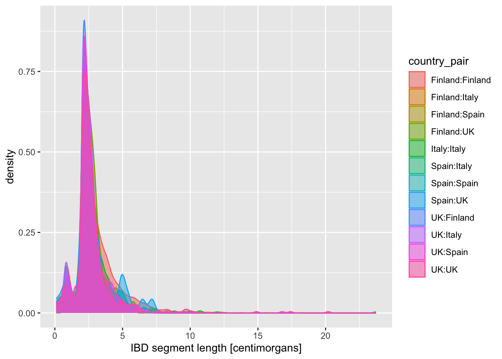
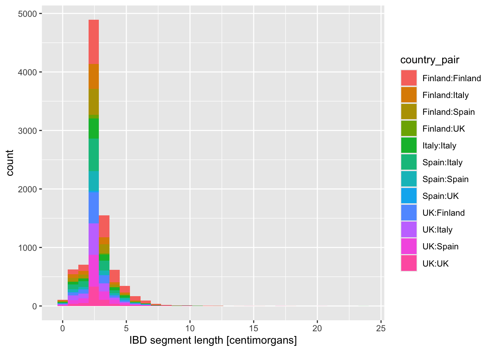
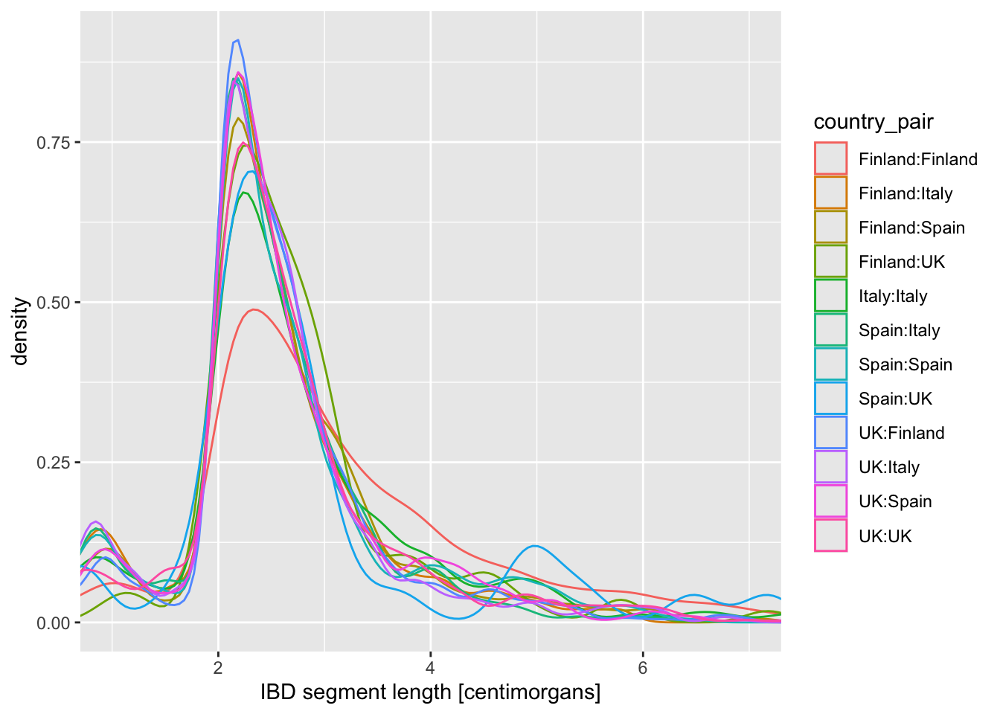

library(ggplot2) # the star of the day!
library(dplyr)
library(readr)
# source our utility functions so that we have them available
source("ibd_utils.R")
# download and process the metadata and IBD data set
metadata <- process_metadata(bin_step = 10000)
ibd_segments <- process_ibd()
# combine the IBD table with metadata information
ibd_merged <- join_metadata(ibd_segments, metadata)Data visualization
Introduction
In this chapter, we will be delving into the data visualization R package called ggplot2, which is possibly the most famous piece of the tidyverse ecosystem. So much so that people who otherwise don’t use any tidyverse functions (or even who don’t even use R for data analysis itself) still use ggplot2 for making figures. It really is that good.
Part 1: Visualizing patterns in our IBD data
First, let’s start from a clean slate, and leverage our modularized pipeline we created for our IBD data. Create a new R script in RStudio (File -> New file -> R Script), and save it somewhere on your computer as tidy-viz.R (File -> Save). Copy the following bit of code which will execute your IBD and metadata processing pipeline.
The following exercises will focus on basics of visualization of various types of statistical summaries, using your IBD data set as a representative of typical data we deal with when doing data science.
Exercise 0: Concept of layers
An important, powerful, and even elegant concept with building visualizations using ggplot2 is the idea of layering. Let’s start to introduce this from the simplest possible kind of visualization, which is plotting the counts of observations of a categorical (i.e. discrete) variable.
First, what happens when you call a function ggplot() on its own? How about when you call ggplot(metadata), i.e. when we say we want to be plotting something from out metadata table?
Click to see the solution
We get an empty “canvas”! Almost as if we were artist starting to paint something.
ggplot()
Saying that we want to plot metadata doesn’t change anything. We get the same empty canvas, with ggplot2 basically “waiting” for us to give it more instructions.
ggplot(metadata)
As mentioned in my solution, calling ggplot() on its own basically only sets up an empty “canvas”, as if we were about to start painting something.
This might sound like a silly metaphor, but when it comes to ggplot2 plotting, this is actually remarkably accurate. This is exactly because of the layering aspect of ggplot2.
There are two important components of every ggplot2 figure:
1. “Aesthetics”
Aesthetics are a specification of the mapping of variables of a data frame (i.e., columns) to some kind of visual property of a plot (x, or y axis, color, shape, etc.). We specify these aesthetics with a function called aes() which you will see later many times.
2. “Geoms”
Geoms are graphical elements to be plotted (histograms, points, lines, etc.). We specify those using functions such as geom_bar(), geom_histogram(), geom_point(), etc., all of which you will practice now.
How do “aesthetics” and “geoms” fit together?
I like to think about it this way:
- “geoms” specify what our data should be plotted as
- “aesthetics” specify how those geoms should look like
This is all very abstract, but don’t worry. Refer to this as a guideline when you’re implementing the exercises in practice!
Exercise 1: Distribution of a categorical variable
Let’s start very simply, and introduce the layering aspect of ggplot2 visualization package step by step. Our data frame has a column age_bin, which contains the assignment of each individual into a respective time period. Let’s start by visualizing the count of individuals in each time bin.
Run the following code in your R console. It specifies the aesthetic mapping which will map our first variable of interest (column age_bin in our data frame) to the x-axis of our eventual figure. What do you get when you run it? How is the result different from just calling ggplot(metadata) without anything else, like you did above?
Click to see the solution
Let’s take it step by step:
- plotting command only sets up canvas
ggplot()
- saying what data set we want to plot doesn’t change anything (ggplot2 doesn’t know what to plot yet!):
ggplot(metadata)
- mapping an aesthetic still doesn’t do anything, because we didn’t instruct ggplot2 to plot anything even now:
ggplot(metadata, aes(x = age_bin))
A-ha! We see a difference! ggplot2 now mapped the x axis against values of the age_bin variable. Let’s verify this by looking at all possible values of that variable:
table(metadata$age_bin)
present-day (0,10000] (10000,20000] (20000,30000] (30000,40000]
2405 1623 31 2 7
(40000,50000]
1 But even then, the plot still actually doesn’t show anything! Remember, we only instruct ggplot2 to map a variable age_bin to an x-axis of a figure… but we didn’t say what we want to visualize (i.e. a “geom”).
To make a visualization, both aesthetic mapping and some kind of geom is needed! We will do this in the next step.
geom_bar()
You instructed ggplot() to work with the metadata table, you mapped a variable of interest age_bin to the x-axis (and therefore set up a “mapping aesthetic”). To make a complete figure, we need to add a layer with a “geom”! In ggplot, we add layers with the + operator, mimicking the “painter metaphor” of adding layers one by one, composing a more complex figure with each additional layer.
Add + geom_bar() to you plotting command from the previous exercise. What happens then? How do you read the results? Compare then to what you get by running `table(metadata$age_bin).
Click to see the solution
We get a full figure, yay!
ggplot(metadata, aes(x = age_bin)) + geom_bar()
This bar plot matches the counts in our data indeed:
table(metadata$age_bin)
present-day (0,10000] (10000,20000] (20000,30000] (30000,40000]
2405 1623 31 2 7
(40000,50000]
1 It might be hard to believe now but you now know almost everything about doing ggplot2 figures. :) Everything else, all the amazing complexity of the possible ggplot2 figures (really, look at that website!) comes down from _combining these two simple elements: aesthetics and geoms.
Let’s demonstrate the layering aspect a little bit more by adding more layers to our figure! Use a xlab() function to add an x-axis label element using the + operator. Look at ?xlab to see how to use this function in practice.
Click to see the solution
Just as we did with tidyverse %>% data transformation pipelines, as a ggplot2 visualization pipeline gets more complex, it’s a good idea to introduce indentation so that each visualization steps is on its own line.
ggplot(metadata, aes(x = age_bin)) +
geom_bar() +
xlab("Time period [years before present]")
Now continue adding y-axis label with the ylab() function.
Click to see the solution
ggplot(metadata, aes(x = age_bin)) +
geom_bar() +
xlab("Time period [years before present]") +
ylab("Number of individuals")
Give your figure a proper main title using the function ggtitle().
Click to see the solution
ggplot(metadata, aes(x = age_bin)) +
geom_bar() +
xlab("Time period [years before present]") +
ylab("Number of individuals") +
ggtitle("Distribution of sample counts in each time period")
Although individual functions xlab(), ylab(), ggtitle() are useful, oftentimes it’s better to use a general function labs(). Look up its documentation under ?lab, then rewrite the code for your figure to use only this function, replacing your uses of xlab(), ylab(), and ggtitle() just with labs(). Note that the function has other useful arguments – go ahead and use as many of them as you want.
Note: Don’t worry about making your figure cluttered, this is just for practice. In a real paper, you wouldn’t use title or caption directly in a ggplot2 figure, but it’s definitely useful for work-in-progress reports at meetings, etc.
Click to see the solution
ggplot(metadata, aes(x = age_bin)) +
geom_bar() +
labs(
y = "Number of individuals",
x = "Time period [years before present]",
title = "Distribution of sample counts in each time period",
subtitle = "Counts for individuals in 1000 Genomes Project and MesoNeo data",
caption = "Here is an optional caption for the figure, similarly to what
you might do in a real scientific article as a more detailed description of
of what is going on in the plot."
)
You can see that the “present-day” bin completely overwhelms the number of individuals in the oldest bins. This often happens with data which follow a more or less exponential scale. A useful trick is adding a + scale_y_log() layer. You can probably guess what it does, so try adding it to your code!
Does the order of adding layers with the + operator matter? Do a little experiment to figure it out!
It’s useful to keep in mind that you can always pipe a data frame into a ggplot() function using the %>% operator, which always places that table as the first argument in the ggplot() call, where the function expects it. I.e., instead of writing ggplot(metadata, aes(...)), you can also do metadata %>% ggplot(aes(...)). This allows you to transform or summarize data before plotting, which makes the combination of tidyverse and ggplot2 infinitely stronger.
As a refresher and for a bit more practice, filter() the metadata first for individuals who are 10000 years or older, discarding the rest. Then pipe this filter() result into your ggplot() code, keeping the plotting part exactly the same.
Believe it or not, with this basic structure of ggplot2 visualization and combining this with any other type of tidyverse manipulation, filtering, and (as we’ll later see), summarization, you’re ready to make any figure imaginable. Let’s take this one step further.
Exercise 2: Distribution of a numerical variable
In the previous exercise you visualized a distribution of a categorical variable, specifically the counts of samples in an age category. Now let’s look at continuous variables and this time consider our ibd table if IBD segments between pairs of individuals:
tail(ibd_merged)# A tibble: 6 × 18
sample1 sample2 country_pair region_pair time_pair chrom start end rel
<chr> <chr> <chr> <chr> <chr> <dbl> <dbl> <dbl> <chr>
1 NEO232 HG00729 Russia:China Asia:Asia (0,10000… 21 37.6 39.9 none
2 VK276 NEO957 Denmark:Denm… Europe:Eur… (0,10000… 21 48.4 52.9 none
3 SMP5 NA18637 Peru:China America:As… (0,10000… 21 35.8 39.6 none
4 Latvia_HG3 NEO749 Latvia:Denma… Europe:Eur… (0,10000… 21 37.3 39.6 none
5 NEO164 HG00097 Russia:UK Europe:Eur… (0,10000… 21 50.1 52.1 none
6 HG01812 HG01816 China:China Asia:Asia present-… 21 6.77 9.75 none
# ℹ 9 more variables: length <dbl>, country1 <chr>, continent1 <chr>,
# age1 <dbl>, age_bin1 <fct>, country2 <chr>, continent2 <chr>, age2 <dbl>,
# age_bin2 <fct>The most interesting quantity we might want to analyse in the IBD context is the length of IBD segments, which can indicate the degree of genetic affinity or relatedness between individuals. So let’s take a look at the distribution of IBD lengths across our data set as an opportunity to introduce new functionality and useful tricks of ggplot2.
geom_histogram() and geom_density()
You can visualize a distribution of values using the functions geom_histogram() and geom_density(). Both are useful for similar things, each has its strengths and weaknesses from a visualization perspective.
Visualize the distribution of length values across all individuals in your IBD data set, starting with the basic simple patterns of:
ggplot() + geom_histogram(), orggplot() + geom_density(),
just like you did in the previous geom_bar() example. Of course, you have to fill in the aes() accordingly. Try to use the knowledge you obtained in the previous exercise! As a reminder, the length is expressed in units of centimorgans, so add immediately an x-axis label clarifying the units to anyone looking at your figure, either using xlab() or labs(x = ...).
Click to see the solution
Here’s a histogram:
ibd_merged %>%
ggplot(aes(length)) +
geom_histogram() +
labs(x = "IBD length [centimorgans]")`stat_bin()` using `bins = 30`. Pick better value with `binwidth`.
Here’s a density plot:
ibd_merged %>%
ggplot(aes(length)) +
geom_density() +
labs(x = "IBD length [centimorgans]")
To make our data exploration a little easier at the beginning, let’s create a new variable ibd_eur from the total ibd data, with the following transformations:
filter()forregion_pair == "Europe:Europe"filter()fortime_pair == "present-day:present-day"
Save the result of both filtering steps as ibd_eur, and feel free to use the %>% pipeline concept that you learned about previously.
Now visualize the distribution of lengths in the reduced, Europe-only IBD data set stored in the ibd_eur variable. Do this in two versions again, using geom_histogram() or geom_density(). Additionally, for each of the two functions specify either fill or color (or both of them!) based on the variable country_pair. Experiment with the looks of the result and find your favourite (prettiest, cleanest, easiest to interpret, etc.).
How do you compare these different approaches? When does one seems more appropriate than other?
Click to see the solution
- Histogram version with
fillset (I personally don’t find thecolorversion of histograms useful at all so I’m not showing it here):
ibd_eur %>%
ggplot(aes(length, fill = country_pair)) +
geom_histogram() +
labs(x = "IBD segment length [centimorgans]")`stat_bin()` using `bins = 30`. Pick better value with `binwidth`.- Density versions:
- using
coloronly:
ibd_eur %>%
ggplot(aes(length, color = country_pair)) +
geom_density() +
labs(x = "IBD segment length [centimorgans]")
- using
fill, which also requires setting thealphatransparency to avoid accidentally hiding some peaks:
ibd_eur %>%
ggplot(aes(length, fill = country_pair, color = country_pair)) +
geom_density(alpha = 0.5) +
labs(x = "IBD segment length [centimorgans]")
Exercise 3: Categories in facets (panels)
Let’s talk a little bit more about representing multiple dimensions of the data (i.e., the number of variables) and about the ways we can represent them. This topic boils down to the question of “How many dimensions of our data can we represent in a single figure and be it as comprehensible as possible?” which is more and more important the more complex (and interesting!) our questions become.
Looking at the figures of IBD length distributions again (both histograms and densities), it’s clear there’s a lot of overlapping information that is a little hard to interpret. In situations like this, facetting can be very helpful.
Faceting is easier to demonstrate than explain, so just go ahead, take your IBD segment length histogram plot created by geom_histogram() and add + facet_wrap(~ country_pair) at the end. How do you interpret the result?
Click to see the solution
ibd_eur %>%
ggplot(aes(length, fill = country_pair)) +
geom_histogram() +
labs(x = "IBD segment length [centimorgans]") +
facet_wrap(~ country_pair)`stat_bin()` using `bins = 30`. Pick better value with `binwidth`.
What happens when you add these variations of the facet_wrap() call? When would you use one or the other?
+ facet_wrap(~ country_pair)+ facet_wrap(~ country_pair, scales = "free_x")+ facet_wrap(~ country_pair, scales = "free_y")+ facet_wrap(~ country_pair, scales = "free")
Click to see the solution
I’ll use a little trick of storing a ggplot2 result in a variable… because we can add to contents of variables using the + operator thanks to the magic provided by ggplot2!
p_histogram <- ggplot(ibd_eur, aes(length, fill = country_pair)) +
geom_histogram() +
labs(x = "IBD segment length [centimorgans]")This is our base histogram (very hard to read)
p_histogram`stat_bin()` using `bins = 30`. Pick better value with `binwidth`.
1. option
p_histogram + facet_wrap(~ country_pair)`stat_bin()` using `bins = 30`. Pick better value with `binwidth`.
2. option – each facet has its own x-axis scale
p_histogram + facet_wrap(~ country_pair, scales = "free_x")`stat_bin()` using `bins = 30`. Pick better value with `binwidth`.
3. option – each facet has its own y-axis scale
p_histogram + facet_wrap(~ country_pair, scales = "free_y")`stat_bin()` using `bins = 30`. Pick better value with `binwidth`.
4. option – each facets has its own x- and y-axis scales
p_histogram + facet_wrap(~ country_pair, scales = "free")`stat_bin()` using `bins = 30`. Pick better value with `binwidth`.
All approaches have their benefits. In general, personally, I think that figures which show the same statistic across different categories should generally use the same scales on both x- and y-axes, because this makes each facet comparable to each other.
But there are pros and cons to doing all of these in different situations!
Try practicing more faceting by visualizing the histogram of coverage from the metadata table, facetted by age_bin.
Hint: You might have to adjust the scales = argument of facet_wrap() to make the histogram meaningful.
Exercise 4: Limiting axis scales
Above, we clearly have some individual pairs which share a huge amount of IBD. We’ll quantify how much a bit later, but for now, the x-axis appears in the density plot is too spread out. This happens often in visualizing numerical variables. Use these two additional layers to improve the readability of your figures by restricting the range of the x-axis of your figures:
- Add this layer
+ xlim(0, 10)to your figure, - or this layer
+ coord_cartesian(xlim = c(0, 10)).
What’s the difference between both possibilities?
Click to see the solution
Here are the two versions of restricting the x-axis scale. Note that they differ only by the command used at the 5th line!
coord_cartesian()performs so-called “soft clipping” – it restricts the “viewpoint” on the entire data set:
ibd_eur %>%
ggplot(aes(length, color = country_pair)) +
geom_density() +
labs(x = "IBD segment length [centimorgans]") +
coord_cartesian(xlim = c(0, 10))xlim()does “hard clipping” – it effectively removes the points outside of the given range. This usually isn’t what we want, so I personally rarely if ever use this:
ibd_eur %>%
ggplot(aes(length, color = country_pair)) +
geom_density() +
labs(x = "IBD segment length [centimorgans]") +
xlim(0, 10)Warning: Removed 23 rows containing non-finite outside the scale range
(`stat_density()`).
Admittedly they both give the same result, but that’s not always the case, so be careful!
Is there evidence of some countries sharing more IBD sequence within themselves. If that’s the case, it could be a result of a stronger population bottleneck. The previous density plot is a little too busy to be able to see this, so filter your ibd_eur table for rows in which country1 is the same as country2, and then %>% pipe it into the usual ggplot2 density command.
Let’s introduce another useful geom for visualization of this type of numerical data, the boxplot! You can visualize boxplots with the function geom_boxplot(), and calling (in our case right here) aes(x = country_pair, y = length, color = country) within the ggplot() function. Adjust your previous density example according to these instructions to show boxplots instead!
When you have your boxplots, swap out geom_boxplot() for geom_violin().
Note: Hopefully you can see now how super modular and customizable ggplot2 for making many different types of visualizations!
Click to see the solution
ibd_eur %>%
filter(country1 == country2) %>%
ggplot(aes(x = country_pair, y = length, color = country_pair)) +
geom_boxplot() +
labs(y = "IBD segment length [centimorgans]") +
ylim(0, 10)Warning: Removed 23 rows containing non-finite outside the scale range
(`stat_boxplot()`).
ibd_eur %>%
filter(country1 == country2) %>%
ggplot(aes(x = country_pair, y = length, color = country_pair)) +
geom_violin() +
labs(y = "IBD segment length [centimorgans]") +
ylim(0, 10)Warning: Removed 23 rows containing non-finite outside the scale range
(`stat_ydensity()`).
I’m personally a much bigger fan of the violin plot for this kind of purpose, because I feel like boxplot hides too much about the distribution of the data.
On that note, another useful trick we haven’t mentioned yet is that we can plot multiple geoms from the same data! You’re already quite familiar with the ggplot2 concept of layering functions on top of each other using the + operator. What happens when you add + geom_jitter(size = 0.3, color = "darkgray") after the line with geom_violin()? How do you read the resulting figure?
Note: We specified color = "darkgray", which effectively overrides the color = country_pair assigned in the ggplot() call (and which normally sets the color for every single geom we would add to our figure).
What do you think happens when you exchange the order of geom_violin() and geom_jitter(...) in your previous solution? Why does the order matter?
Intermezzo: Saving ggplot2 figures to PDF
Looking at figures in RStudio is useful for exploratory analysis, but when we want to use a figure in a paper or a presentation, we need to save it to disk. Doing this is very easy using the function ggsave().
There are generally three options:
- Simply running a ggplot2 command, and calling
ggsave()right after to save a single figure. Something like this:
# we first plot a figure by running this in the R console:
ggplot(ibd_eur, aes(length, fill = country_pair)) +
geom_histogram() +
labs(x = "IBD segment length [centimorgans]")
# this then saves the last figure to a given file
ggsave("~/Desktop/ibd_length_histogram.pdf")- Or, sometimes in a larger script (like we’ll see later), it’s useful to actually save a ggplot to a variable (yes, you can do that!), and then give that variable to a
ggsave(). This is useful when you want to first create multiple plots, store them in their own variables, then save them to files at once. Something like this:
# we first create a histogram plot
p_histogram <- ggplot(ibd_eur, aes(length, fill = country_pair)) +
geom_histogram() +
labs(x = "IBD segment length [centimorgans]")
# then we create a density plot
p_density <- ggplot(ibd_eur, aes(length, fill = country_pair)) +
geom_density(alpha = 0.7) +
labs(x = "IBD segment length [centimorgans]")
# note that if you type the variable into your R console (try this please!),
# you will get your figure visualized:
p_histogram
# we can save figures stored in variables like this
ggsave("~/Desktop/ibd_length_histogram.pdf", p_histogram)
ggsave("~/Desktop/ibd_length_density.pdf", p_density)- Save multiple figures into a single PDF. This requires a different approach, in which we first initialize a PDF file, then we have to print(!) individual variables with each ggplot2 figure, and then close that PDF file. Yes, this is confusing, but don’t worry about the technical details of it!
# this creates an empty PDF
pdf("~/Desktop/multiple_plots.pdf")
# we have to print(!) individual variables with each plot
print(p_histogram)
print(p_density)
# this closes the PDF
dev.off()I don’t think it’s very interesting to create a specific exercise for it. Just try running these thre examples on your own, and see what happens! We’ll be using these techniques a lot in the next session, so just keep them in mind for now..
Note: Take a peek at ?ggsave and ?pdf help pages to see customization options, particularly on the sizes of the PDFs. Also, how would you create a PNG images with the figures? Use the help pages!
Exercise 5: Relationship between two variables
geom_point()
We’ll now look at creating another type of visualization which is extremely useful and very common: a scatter plot!
But first, let’s do some more data summarization so that we can demonstrate building of scatter plots using ggplot2. At this point, this should all be a piece of cake for you!
The previous figures showed distributions of individual segment lengths on present-day individuals only. Another useful quantity is the number of segments shared between a pair of individuals and the total number of IBD sequence between those pairs.
Practice your knowledge of group_by() and summarize() and apply them to our huge ibd_segments table, to achieve the following:
Start with our original big IBD table
ibd_segments(not the smalleribd_eur!)filter()for rows in whichregion_pair == "Europe:Europe"(only pairs within Europe, just as we did before),filter()for rows in whichlength > 10(only long IBD segments)filter()for rows in whichage_bin1 == age_bin2(only individuals from the same age bin),group_by()to create groupings based onsample1,sample2,country_pair,region_pair, andtime_pair,summarize()to create two new quantitiesn_ibd = n()andtotal_ibd = sum(length)(total number of long IBD segments and their total sequence for each of individuals).
Save the result of your %>% pipeline implementing the steps 1.-3. above in a variable ibd_sum.
Your work so far has been based on a small subset of the overall IBD data, just for chromosome 21. To move to more complex and interesting visualization, execute this command which reads the ibd_long just like you created it yourself, except based on all chromosomes in the entire genome. We’ll be working on that from now on.
ibd_sum <- read_tsv("http://tinyurl.com/simgen-ibd-sum")Rows: 15119 Columns: 9
── Column specification ────────────────────────────────────────────────────────
Delimiter: "\t"
chr (7): sample1, sample2, rel, country_pair, region_pair, time_pair, distance
dbl (2): n_ibd, total_ibd
ℹ Use `spec()` to retrieve the full column specification for this data.
ℹ Specify the column types or set `show_col_types = FALSE` to quiet this message.With our summarized table ibd_sum ready, we’re ready to create our scatter plot. When we worked with geom_histogram(), geom_density(), and geom_bar(), we only needed to do something like this:
df %>%
ggplot(aes(x = COLUMN_NAME)) +
geom_FUNCTION()Because scatter plot is two-dimensional, we have to specify not only the x but also the y in the aes() aesthetic mapping… and with that bit of information, I think you already know how to do this based on your knowledge of basic ggplot2 techniques introduced above!
Use the function geom_point() to visualize the scatter plot of x = total_ibd against y = n_ibd. We know that related individuals share a large amounts of IBD sequence between each other. As a reminder, the entire human genome spans about 3000 centimorgans. Can you guess from your figure which pairs of individuals (a point on your figure representing one such pair) could be potentially closely related?
Note: Don’t worry about this too much, just take a guess. Below we’ll look at this question more closely.
Click to see the solution
It looks like some pairs of individuals share almost their entire genome in IBD, around the whole 3 gigabases of sequence!
We’ll work on clarifying that below.
ibd_sum %>%
ggplot(aes(x = total_ibd, y = n_ibd)) +
geom_point()
From the introduction of histograms and densities, you’re already familiar with modifying the aes() aesthetic of a geom layer using the color argument of aes(). Right now your dots are all black, which isn’t super informative. Luckily, you’re IBD table has a “mysterious” column called rel. What happens when you color points based on the values in this column inside the aes() function (i.e., set color = rel)? Similarly, what happens when you set shape = rel?
Look at a figure from this huge study of IBD patterns and their relationship to the degree of relatedness between individuals? This is completely independent data set and independent analysis, but do you see similarities between this paper and your figure?
Click to see the solution
ibd_sum %>%
ggplot(aes(x = total_ibd, y = n_ibd, color = rel)) +
geom_point()
I have to say I kind of hate that “none” (basically an baseline background) is given a striking purple. I woudln’t want that in my paper, and we will show a potential solution to this soon! For now, let’s keep going.
We’re approching something which isn’t far from a publication quality figure. To get even closer, use the + labs() layer function to properly annotate your x and y axes, and give your figure a nice title too.
Click to see the solution
ibd_sum %>%
ggplot(aes(x = total_ibd, y = n_ibd, color = rel)) +
geom_point() +
labs(x = "total IBD sequence", y = "number of IBD segments",
title = "Total IBD sequence vs number of IBD segments",
subtitle = "Both quantities computed only on IBD segments 10 cM or longer")
Exercise 6: Multiple data sets in one plot
So far we’ve always followed this pattern of ggplot2 usage, to borrow our very first geom_histogram() example just for the sake of explanation:
ggplot(ibd_segments, aes(length)) + geom_histogram()`stat_bin()` using `bins = 30`. Pick better value with `binwidth`.
However, you can also do this and it will give the same result (try it– it will come in handy many times in the future!):
ggplot() +
geom_histogram(data = ibd_segments, aes(length))`stat_bin()` using `bins = 30`. Pick better value with `binwidth`.
In other words, each geom_<...>() function accepts both data data frame and also its own aes() aesthetic and mapping function. You could think of this as each individual geom having a “self-contained” ggplot() function’s ability.
This can be very useful whenever you want to plot different geoms with their own aesthetic parameters (colors, shapes, sizes)! Let’s work through an exercise to explain this better, step by step, to make our IBD scatter plot figure much more nicer to look at.
Above I complained a little bit how the “none” related data points are given just as strikingly colorful points as data points of interest. What we want to establish is different visual treatments of different kinds of data. Here’s one solution to do this (which will also demonstrate a very very useful ggplot2 trick).
First, take your ibd_sum_total table and create two versions of it using filter() like this:
ibd_unrel <- filter(ibd_sum, rel == "none")ibd_rel <- filter(ibd_sum, rel != "none")
The first table contains only those pairs of individuals with missing information about relatedness, the second one contains only those rows with this information present.
Print out the ibd_unrel and ibd_rel tables to make sure they both contain the same columns, even though they have different rows.
Then visualize the ibd_unrel (i.e., IBD summaries between unrelated individuals) table with the following “template”.
Note: The ggplot() in this case has no arguments, just like we showed in the two versions of geom_histogram() above! Take a look at that example again if you need to. In our case here, similarly, everything is in the geom_point() call!
ggplot() +
geom_point(data = <DATA FRAME>, aes(<ADD WHAT IS NEEDED>), color = "lightgray")
Click to see the solution
ggplot() +
geom_point(data = ibd_unrel, aes(x = n_ibd, y = total_ibd), color = "lightgray")
Now visualize the scatter plot of pairs of individuals which are known to be related, ibd_rel, so something looking like this:
ggplot() +
geom_point(data = <DATA FRAME>, aes(<ADD WHAT IS NEEDED>, color = rel)) +
Click to see the solution
ggplot() +
geom_point(data = ibd_rel, aes(x = n_ibd, y = total_ibd, color = rel))
Compare the two figures you just created, based on ibd_rel and ibd_unrel to the complete figure based on ibd_sum you created above. You can see that these to plots together are showing the same data.
You have now plotted the two scatter plots separately, but here comes a very cool aspect of ggplot2 I wanted to show you. You can combine the two figures, each plotting a different data frame, into one! Do this now and to make the figure even nicer (and even publication ready!), add proper x and y labels, overall plot title as well as subtitle (all using the labs() layer functions) as well as adjust the legend title (just like you did with the guides() layer function above).
In the geom_point() command plotting unrelated individuals (ibd_unrel), in addition to setting color = "lightgray", set also size = 0.75.
Hint: If it still isn’t clear, don’t worry. Here’s a bit of help of what your plotting code should look like:
ggplot() +
geom_point(<YOUR CODE PLOTTING UNRELATED IBD PAIRS>)
geom_point(<YOUR CODE PLOTTING RELATED IBD PAIRS>) +
labs(<x, y, title, and subtitle text>) +
guides(color = guide_legend("relatedness"))
Click to see the solution
Here’s the complete solution to this exercise:
ibd_unrel <- filter(ibd_sum, rel == "none")
ibd_rel <- filter(ibd_sum, rel != "none")
ggplot() +
geom_point(data = ibd_unrel, aes(x = total_ibd, y = n_ibd), color = "lightgray", size = 0.75) +
geom_point(data = ibd_rel, aes(x = total_ibd, y = n_ibd, color = rel)) +
labs(
x = "total IBD sequence",
y = "number of IBD segments",
title = "Total IBD sequence vs number of IBD segments",
subtitle = "Both quantities computed only on IBD segments 10 cM or longer"
) +
guides(color = guide_legend(title = "relatedness"))
As a bonus, and to learn another parameter of aes() useful for scatter plots, in addition to setting color = rel (which sets a color of each point based on the relatedness value), add also shape = rel! Observe what happens when you do this!
Finally, I’m not personally fan of the default grey-filled background of ggplots. I like to add + theme_minimal() at the end of my plotting code of many of my figures, particularly when I’m creating visualizations for my papers. Try it too!
Click to see the solution
Here’s the complete solution to this exercise:
ibd_unrel <- filter(ibd_sum, rel == "none")
ibd_rel <- filter(ibd_sum, rel != "none")
ggplot() +
geom_point(data = ibd_unrel, aes(x = total_ibd, y = n_ibd), color = "lightgray", size = 0.75) +
geom_point(data = ibd_rel, aes(x = total_ibd, y = n_ibd, color = rel, shape = rel)) +
labs(
x = "total IBD sequence",
y = "number of IBD segments",
title = "Total IBD sequence vs number of IBD segments",
subtitle = "Both quantities computed only on IBD segments 10 cM or longer"
) +
guides(
color = guide_legend(title = "relatedness"),
shape = guide_legend(title = "relatedness")
) +
theme_minimal()
Part 2: Practicing visualization on time-series data
Exercise 7: Using your knowledge on new data
We’ve spent a lot of time looking at metadata and IBD data, demonstrating various useful bits of techniques from across tidyverse and ggplot2. There are many more useful things to learn, but let’s switch gears a little bit and look at a slightly different kind of data set, just to keep things interesting.
First, create a new script and save it as f4ratio.R.
Then add the following couple of lines of setup code, which again loads the necessary libraries and also reads a new example data set:
library(dplyr)
library(readr)
library(ggplot2)
f4ratio <- read_tsv("https://tinyurl.com/simgen-f4ratio", show_col_types = FALSE)This data set contains results from a huge population genetics simulation study I recently did, and contains estimates of the proportion of Neanderthal ancestry in a set of European individuals spanning the past 50 thousand years.
Here’s a brief description of the contents of the columns:
1 individual, time – name and time (in years before present) of an individual 2. statistic – a variant of an estimator of Neanderthal ancestry 3. proportion – the proportion of Neanderthal ancestry estimated by statistic 4. rate_eur2afr – the amount of ancient migration (gene flow) from Europe to Africa in a given scenario 5. replicate – the replicate number of a simulation run (each scenario was run multiple times to capture the effect of stochasticity)
head(f4ratio)# A tibble: 6 × 6
individual time statistic proportion rate_eur2afr replicate
<chr> <dbl> <chr> <dbl> <dbl> <dbl>
1 eur_1 40000 direct f4-ratio 0.00687 0 1
2 eur_2 38000 direct f4-ratio 0.00807 0 1
3 eur_3 36000 direct f4-ratio 0.00192 0 1
4 eur_4 34000 direct f4-ratio 0.0245 0 1
5 eur_5 32000 direct f4-ratio 0.000390 0 1
6 eur_6 30000 direct f4-ratio -0.00267 0 1In other words, each row of this table contains the proportion of Neanderthal ancestry estimated for a given individual at a given time in some scenario specified by a given set of other parameters (rate_afr2afr, rate_eur2afr, replicate).
In this exercise, I will be asking you some questions, the answers to which you should be able to arrive to by the set of techniques from tidyverse you’ve already learned, and visualize them using the ggplot2 functions you already know. When a new function will be needed, I will be dropping hints for you along the way!
This exercise is primarily intended for you to practice more ggplot2 visualization, because I think this is the most crucial skill in doing any kind of data analysis. Why? The faster you can get from an idea to a visualization of that idea, the faster you’ll be able to do research.
Yes, we could do this on the MesoNeo metadata or the IBD data too, but I think it would be too boring to stay with the same set of tables for this long. :)
Let’s go!
Use geom_point() to plot the relationship between time (x axis) andpropotionof Neanderthal ancestry (y` axis). Don’t worry about any other variables just yet (colors, facet, etc.).
Note: The f4ratio table is too huge to plot every single point. Before you %>% pipe it into ggplot(), subsample the rows to just 10% of it subset using this trick:
f4ratio %>%
sample_frac(0.1) %>% # subsample 10% fraction of the data
ggplot(aes(...)) +
geom_point()Hint: Look at ?sample_frac but also ?sample_n and check out their parameters. They are incredible useful for any kind of data exploration!
Click to see the solution
f4ratio %>%
sample_frac(0.1) %>%
ggplot(aes(time, proportion)) +
geom_point()
Your plot now mashes together proportion values from two different statistic estimators. Fix this by facetting the plot, which will visualize both statistics in two separate panels. For the time being, keep doing the 10% subsampling step.
Hint: You can do this by adding + facet_wrap(~ statistic) to your previous code.**
Take a look at the values on the x-axis of your figures. Purely for aesthetics, it is customary to visualize time going from oldest (left) to present-day (right). But currently the time direction is reversed. Fix this by adding a new layer with + scale_x_reverse()!
Whenever we visualize some biological statistics, we often want to compare their values to some kind of baseline (or a null hypothesis) value. In our case we have two:
- baseline of “no Neanderthal ancestry” at y-axis value 0,
- baseline of “known proportion of Neanderthal ancestry” today, which is about 3% (so y-axis value of 0.03).
Add those two baselines to your figure using a new function geom_hline() (standing for “horizontal line”). Like this:
<YOUR TIDYVERSE AND GGPLOT2 CODE ABOVE> +
geom_hline(yintercept = 0.03, color = "red", linetype = "dashed") +
geom_hline(yintercept = 0, color = "black", linetype = "dotted")Note: You can immediately see the possibilities for adjusting the visuals like colors or linetype. Feel free to experiment with this!
Click to see the solution
f4ratio %>%
sample_frac(0.1) %>%
ggplot(aes(time, proportion)) +
geom_point() +
facet_wrap(~ statistic) +
scale_x_reverse() +
geom_hline(yintercept = 0.03, color = "red", linetype = "dashed") +
geom_hline(yintercept = 0, color = "blue", linetype = "dotted")
There’s clearly a huge amount of statistical noise, represented particularly in the “indirect f4-ratio” figure. And we’re not even plotting all points because there’s just too many of them!
Additionally, what I cared about in this particular case (during my PhD) were not values for each individual person, but about the statistical trend in my data. An extremely important function for this is geom_smoot(), which fits a line through the data, capturing this trend.
In this next part, remove the subsampling done by sample_frac(), and also replace your geom_point() call in your figure with this: + geom_line(stat = "smooth", se = FALSE). What happens when you do this? Read ?geom_line to figure out what se = FALSE means. Why do we want to do this?
Click to see the solution
f4ratio %>%
ggplot(aes(time, proportion)) +
geom_line(stat = "smooth", se = FALSE) +
facet_wrap(~ statistic) +
scale_x_reverse() +
geom_hline(yintercept = 0.03, color = "red", linetype = "dashed") +
geom_hline(yintercept = 0, color = "blue", linetype = "dotted")`geom_smooth()` using method = 'gam' and formula = 'y ~ s(x, bs = "cs")'
Well, we removed a lot of noise but we also removed most of the interesting signal! This is because we are now basically “smoothing” (averaging) over a very important variable: the amount of migration from Europe to Africa (which was the primary research interest for me at the time). Let’s take a look at our table again:
head(f4ratio)# A tibble: 6 × 6
individual time statistic proportion rate_eur2afr replicate
<chr> <dbl> <chr> <dbl> <dbl> <dbl>
1 eur_1 40000 direct f4-ratio 0.00687 0 1
2 eur_2 38000 direct f4-ratio 0.00807 0 1
3 eur_3 36000 direct f4-ratio 0.00192 0 1
4 eur_4 34000 direct f4-ratio 0.0245 0 1
5 eur_5 32000 direct f4-ratio 0.000390 0 1
6 eur_6 30000 direct f4-ratio -0.00267 0 1What we want is to plot not just a single line across every single scenario, but we want to plot one line for each value of our variable of interest, rate_eur2afr.
Let’s add the variable into play by adding color = rate_eur2afr into your aes() call in the ggplot() function (i.e., in addition to the x = time and y = proportion you already got there).
Note: You’ll get a warning which we will fix in the next step, don’t worry!
Click to see the solution
f4ratio %>%
ggplot(aes(time, proportion, color = rate_eur2afr)) +
geom_line(stat = "smooth", se = FALSE) +
facet_wrap(~ statistic) +
scale_x_reverse() +
geom_hline(yintercept = 0.03, color = "red", linetype = "dashed") +
geom_hline(yintercept = 0, color = "blue", linetype = "dotted")`geom_smooth()` using method = 'gam' and formula = 'y ~ s(x, bs = "cs")'Warning: The following aesthetics were dropped during statistical transformation:
colour.
ℹ This can happen when ggplot fails to infer the correct grouping structure in
the data.
ℹ Did you forget to specify a `group` aesthetic or to convert a numerical
variable into a factor?
The following aesthetics were dropped during statistical transformation:
colour.
ℹ This can happen when ggplot fails to infer the correct grouping structure in
the data.
ℹ Did you forget to specify a `group` aesthetic or to convert a numerical
variable into a factor?
Don’t worry about the warning, we’ll fix this soon!
The reason we got a warning here is a slightly confusing behavior of the smoothing function geom_smooth(). Because rate_eur2afr is a numerical variable, the smoothing function cannot plot a single smoothed line for each of its values, because there could be infinite numnber of them.
Fix the problem by adding group = rate_eur2afr right after your color = rate_eur2afr you added in the previous exercise. This explicitly instructs geom_smooth() to treat individual values of rate_eur2afr as discrete categories.
Click to see the solution
f4ratio %>%
ggplot(aes(time, proportion, color = rate_eur2afr, group = rate_eur2afr)) +
geom_line(stat = "smooth", se = FALSE) +
facet_wrap(~ statistic) +
scale_x_reverse() +
geom_hline(yintercept = 0.03, color = "red", linetype = "dashed") +
geom_hline(yintercept = 0, color = "blue", linetype = "dotted")`geom_smooth()` using method = 'gam' and formula = 'y ~ s(x, bs = "cs")'
Let’s finalize our figure for publication! Use labs() to add proper x, y, and title descriptions (something like “Neanderthal ancestry proportion”, “years before present”, and “Expected Neanderthal ancestry trajectories”).
Don’t forget about the title of the legend too, which you can adjust by + guides(color = guide_legend("EUR -> AFR\nmigration")).
Finally, add my favourite + theme_minimal() at the end.
I hope that you now appreciate how adding little bits and pieces, one step at a time (and each step being very tiny and easily understandable!), makes it possible to create beautiful informative visualizations of any kind of tabular data!
Exercise 8: Combining figures
So, here’s an extremely cool revelation. Do you remember how we went through various data types and object classes in the R bootcamp? Numeric, logical, character types, etc?
ggplot() functions actually do return a (hidden) value, which is a normal object like any other R value! The fact that we immediately see a plot visualized is “just” a side effect that R provides for convenience! After all, when we write plotting code, we usually want to see the plot, right?
What does this mean? Well, first of all, consider this bit of code:
p1 <- ggplot()Weird, huh? Why would you do that? When you type p1 in your R console you get the usual (empty) figure!
p1
Of course, we can also create (and save in a variable) a full figure like this:
p1 <- ggplot(ibd_sum, aes(total_ibd)) + geom_density() + ggtitle("Normal x-axis scale IBD total sum")
p1
We could also create and save another figure, this time a density on a log scale, just by adding a new layer to the p1 variable plot:
p2 <- p1 + scale_x_log10() + ggtitle("Logarithmic x-axis scale IBD total sum")
p2
This is extremely useful for making composite figures built out of individual panels (like you often see in scientific figures as panels A, B, C, etc.). The way we can do this is using a helper R package cowplot (don’t ask me about its name, I have no idea! :)) and its function plot_grid(). Check this out:
library(cowplot)
plot_grid(p1, p2, labels = c("A", "B"))
This is an extremely useful pattern because it basically eliminates the need for manually pasting figures in a graphics editor (which defies the purpose of reproducibility!). The sky is actually a limit, because you can place other plot_grid() calls within another plot_grid(), composing figures of various levels of complexity. Check out a figure from one of my papers, each panel is an independently made ggplot2 figure, all pasted together with plot_grid().
For instance, if we make p3 like this:
# create a silly scatter plot of geographical coordinates of our samples
# (do you see an outline of Europe? :))
p3 <-
metadata %>%
filter(continent == "Europe") %>%
ggplot(aes(longitude, latitude)) +
geom_point() +
ggtitle("A silly toy map of Europe drawn using locations of metadata points")
p3Warning: Removed 405 rows containing missing values or values outside the scale range
(`geom_point()`).You could combine them like this (this is just an example, don’t read too much into the meaning of putting these particular plots together).
plot_grid(
p3,
plot_grid(p1, p2, labels = c("B", "C")),
nrow = 2,
labels = "A"
)Warning: Removed 405 rows containing missing values or values outside the scale range
(`geom_point()`).
Additional resources
As with our introduction to tidyverse, there’s so much more to ggplot2 than we had a chance to go through. I hope we’ll get through some spatial visualization features of R (which are tightly linked with tidyverse and ggplot2 in the modern R data science landscape), but there’s much more I wish we had time to go through.
Here are a couple of resources for you to study after the conclusion of the workshop, or even during the workshop itself if you find yourself with more time and more energy to study.
Factors are both a curse and blessing. When dealing with visualization, often a curse, because our factors are rarely ordered in the way we want. If our factors are numerical but not straightforward numbers (like our
age_bincolumn above), their order in ggplot2 figures is often wrong. forcats is an incredible package which helps with this. Read about it in this vignette and then experiment with using it for figures in this session which featured factors.cowplot is another R package that’s very useful for complex composite figures. We touched upon it in this session, but only extremely vaguely. Study this introduction to learn much more about its features! You will never need Inkscape again.
ggridges is a very cool package to visualize densities across multiple categories. It can often lead to much more informative figures compared to overlapping
geom_density()plots we did in our session. Here’s a great official introduction to the package.